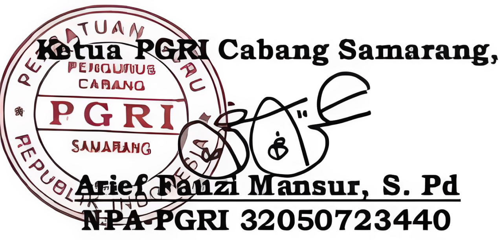

Sambutan Ketua

Assalamu'alaikum Wr. Wb.
Salam Solidaritas!
Website ini bukan sekadar media publikasi, melainkan jendela informasi, jembatan komunikasi, dan ruang kolaborasi bagi seluruh anggota PGRI. Melalui platform ini, kami berharap informasi organisasi, program kerja, kegiatan, serta berbagai gagasan dan inovasi pendidikan dapat diakses secara luas, sehingga terbangun komunikasi yang efektif dan hubungan yang semakin kuat antara pengurus, anggota, dan masyarakat.
Sejalan dengan transformasi digital, pengembangan sumber daya manusia menjadi kunci utama kemajuan organisasi. PGRI berkomitmen mendorong peningkatan kompetensi, profesionalisme, literasi digital, dan kapasitas guru serta tenaga kependidikan agar mampu beradaptasi dengan perubahan zaman dan berkontribusi nyata dalam meningkatkan mutu pendidikan.
Kami mengajak seluruh pengurus dan anggota untuk menjadikan website ini sebagai sarana berbagi informasi, menyampaikan aspirasi, memperluas wawasan, dan memperkuat sinergi. Dengan semangat kebersamaan, keterbukaan, dan inovasi, kita wujudkan PGRI yang semakin modern, profesional, berintegritas, dan mampu menjawab tantangan masa depan tanpa meninggalkan nilai-nilai perjuangan organisasi.
Akhir kata, semoga website ini menjadi langkah nyata dalam memperkuat eksistensi PGRI di era digital serta mendukung terwujudnya guru yang bermartabat dan pendidikan Indonesia yang berkualitas. Mari terus bersinergi dan berinovasi demi kemajuan PGRI dan masa depan pendidikan bangsa.
Semoga dapat memberikan manfaat bagi semua.
